Hybrid A‑Φ finite-element solver. Two parallel copper wires driven with equal
currents a quarter cycle apart — the only case in the suite whose field is
elliptically polarized, and the one that demonstrates the [postprocess]
options.
Three things, in order of how much work they do.
It demonstrates every [postprocess] option. Sixteen requests covering all three
geometries, every display, phase_deg, colormap and data. That
is the reason the case exists, and §4 is the tour.
It is the only case in the suite with an elliptically polarized field. A single conductor
has B purely azimuthal, so the polarization ellipse collapses to a line and
axial_ratio, peak against complex_magnitude, and
phase all go trivial — case 05's median axial ratio is 9e-06. Two
sources 90° apart make B genuinely rotate, and the two-wire superposition says
exactly where. §6.
It is the first case to exercise a port phase_deg at all. Everything else in
the suite uses 0 or omits the key, so nothing would have caught it quietly doing
nothing. Measured: 90.014° between the wires.
It also found a renderer bug on its first run, which is what a case with a known
analytic answer is for. axial_ratio read 2.7e-05 where theory says exactly
1.0 — tools/postprocess.py was dividing |P×Q| by a
once, which gives the semi-minor axis b rather than the ratio b/a. The
wrong quantity is in the field's own units and looks entirely plausible on a colour bar; only a case
with an exact expected value separates the two.
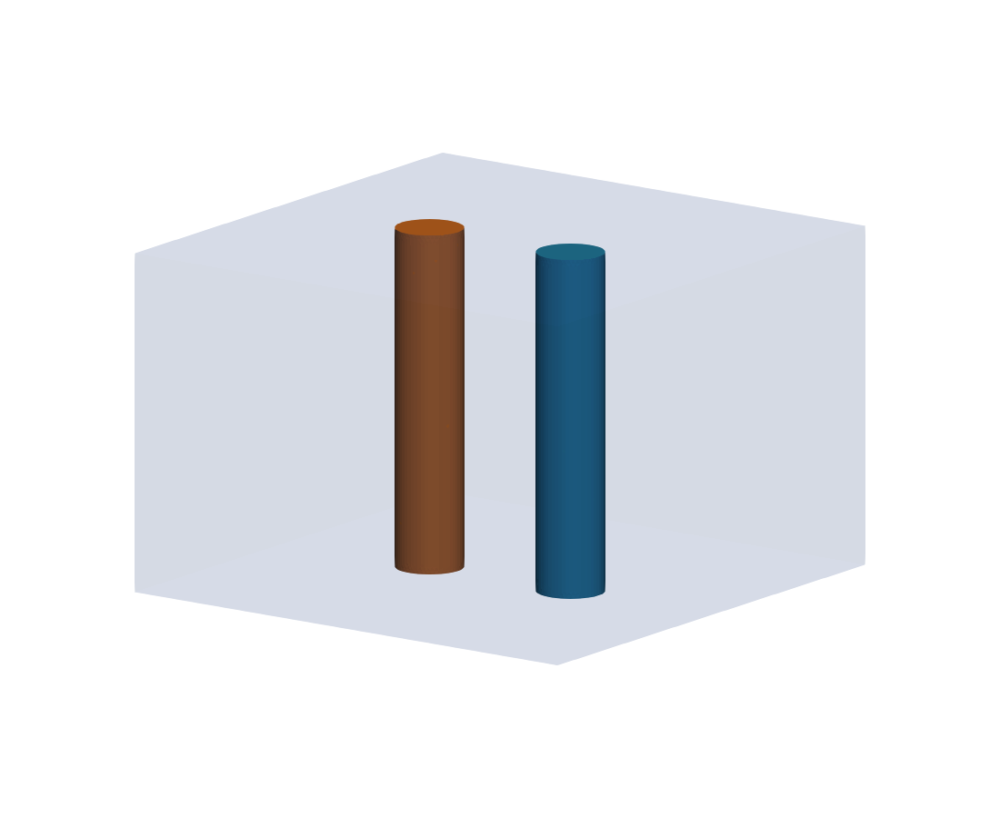
a = 2 mm, centres
d = 10 mm apart, 20 mm long, in a 30 × 30 × 20 mm
box. The wires run the full height of the box, so their end faces lie in the box's end faces
— which is what lets each wire be driven by a boundary port rather than needing an internal cut
(case 05's problem).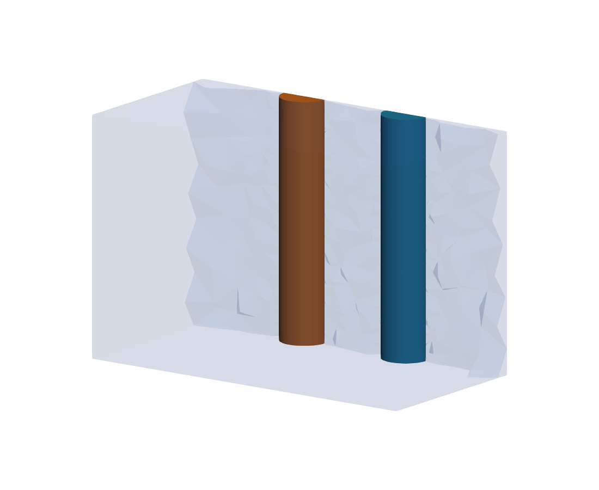
y = 0, the plane through both axes, so the wires are seen
directly rather than through 14 mm of air.Wire radius a | 2 mm |
Separation d | 10 mm, so d/a = 5 |
Length Lz | 20 mm, Lz/a = 10 |
| Domain | 30 × 30 × 20 mm of air, n × A = 0 on the outer boundary |
| Conductor | copper, σ = 5.8e7 S/m |
| Air | σ = 0 |
| Frequency | 2500 Hz |
Skin depth δ | 1.3217 mm, so a/δ = 1.511 |
Why 2.5 kHz. Low enough that the case solves in twenty seconds, high enough that
a/δ > 1 and the current visibly crowds toward the surface. It also puts a
53° phase gradient inside each conductor, which is what gives
display = phase something to show in §4.3 instead of a flat fill.
Three bodies, not two. wire1, wire2 and air carry
body_tag 1, 2 and 3. Worth stating because every earlier case has exactly two bodies and
the air is always tag 2 — scripts that hard-code that assumption read a wire here and produce a
plausible, wrong answer. tools/skin_profile.py finds the conductors by
sigma > 0 instead of by tag for this reason.
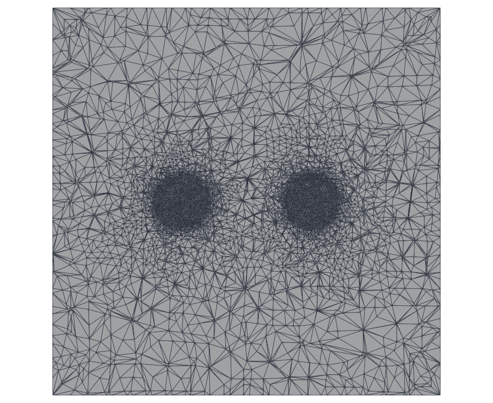
xy cut at mid-height. Fine inside the conductors, coarsening
outward through the air to lc_far = 3 mm at the walls.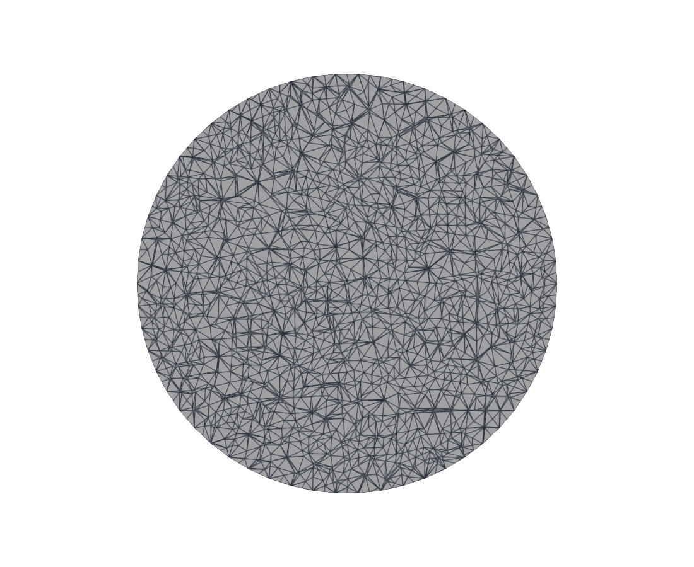
z. Median element 0.317 mm against
δ = 1.3217 mm — about 4.2 elements per skin depth.The size field asks for 0.25 mm and the median comes out 0.317 mm. These are not the same
number and the report quotes the measured one. gmsh treats lc_wire as a target that its
own quality constraints relax, so a resolution claimed from the .geo is optimistic by
about 25 % here.
The skin depth is a length scale in the metal, so that is where the elements must be small. A distance-to-the-surface field cannot express that: distance is positive on both sides of a surface, so asking for 0.25 mm at the wire boundary also refines a 2 mm shell of air around each wire. That produced about 660,000 elements, more than half of them air — air in which nothing varies on a skin-depth scale at all.
Two gmsh Cylinder fields instead, which size the interior of a cylinder and leave
everything outside it alone, with the air graded on its own terms:
Field[3] = Cylinder;
Field[3].Radius = 1.02 * a;
Field[3].VIn = lc_wire; // 0.25 mm
Field[3].VOut = lc_far;192,368 tets instead of 660,000, for the same resolution where it matters.
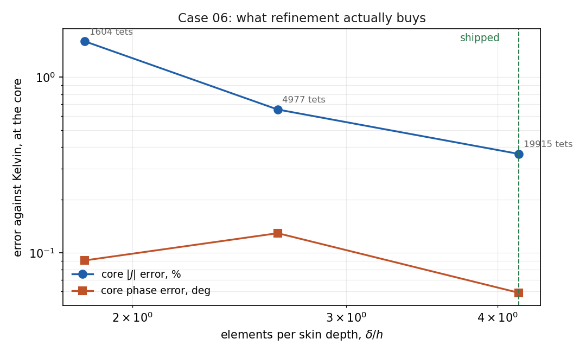
Three refinements, each meshed, solved and compared against Kelvin at the core by
make_convergence_data.py:
lc_wire | median h | per δ | wire tets | core |J| err | core lag err | solve |
|---|---|---|---|---|---|---|
| 0.60 mm | 0.724 mm | 1.8 | 1,604 | +1.600 % | +0.090° | ~8 s |
| 0.40 mm | 0.502 mm | 2.6 | 4,977 | +0.654 % | +0.129° | ~12 s |
| 0.25 mm | 0.317 mm | 4.2 | 19,915 | +0.365 % | −0.059° | ~20 s |
The shipped mesh is the finest, and the magnitude column is what justifies it: 1.60 % → 0.65 % → 0.37 %, for 8 s → 20 s. The coarsest is already fine for a demonstration you edit and re-run; the finest is what makes the skin-effect comparison in §5 worth quoting at all.
The phase column is not converging, and that is honest rather than worrying. It wanders +0.090° → +0.129° → −0.059°. A tenth of a degree is this comparison's own noise floor — the radial binning, the azimuthal spread within each bin and the finite cell sample each contribute more than the discretisation does. A clean monotone trend at that magnitude would be more suspicious than this wandering is.
Three points do not establish a convergence order, and this report does not claim
one. An earlier version of this case claimed first-order convergence in h from
two meshes. Two points fit any power law you care to assume — they cannot test one. The
third point showed the apparent order collapsing to 0.37, which turned out not to be a property of
the solver at all but a constant offset in the measurement: §5.3.
Each wire is driven independently, and each therefore needs its own potential reference: a current source on the bottom face, a 0 V terminal on the top.
[port P1] [port P3]
type = boundary_current type = boundary_current
surface = wire1_bottom surface = wire2_bottom
current = 1.0 current = 1.0
phase_deg = 0 phase_deg = 90 # <-- the whole point
[port P2] [port P4]
type = boundary_voltage type = boundary_voltage
surface = wire1_top surface = wire2_top
voltage = 0.0 voltage = 0.0Under the solver's e^{+jωt} convention a port phase φ means
the terminal current is I cos(ωt + φ), so wire 2's current leads wire 1's by a
quarter cycle.
| measured | target | |
|---|---|---|
|I| in wire 1 | 1.000405 A | 1 A |
|I| in wire 2 | 0.998795 A | 1 A |
| phase difference | 90.014° | 90° |
The current is recovered by integrating J_z over a slab at mid-length and
dividing by the slab's thickness — Σ J_z ΔV / Δz — rather
than over a single plane of faces. Many layers of tets then contribute and no one plane's mesh can set
the answer. Neither wire's port is on the plane being measured, so this is a check and not a
restatement of the input.
Sixteen requests. Every picture in this section comes from the manifest the solver itself writes
(output/postprocess.json) rendered by tools/postprocess.py. Nothing here is
hand-plotted — that is the claim the case is making, so
collect_postprocess_figs.py copies those exact files into fig/ rather than
redrawing them.
..\run_case.bat two_wires.aphi
"C:\Program Files\ParaView 6.1.1\bin\pvbatch.exe" ..\..\tools\postprocess.py output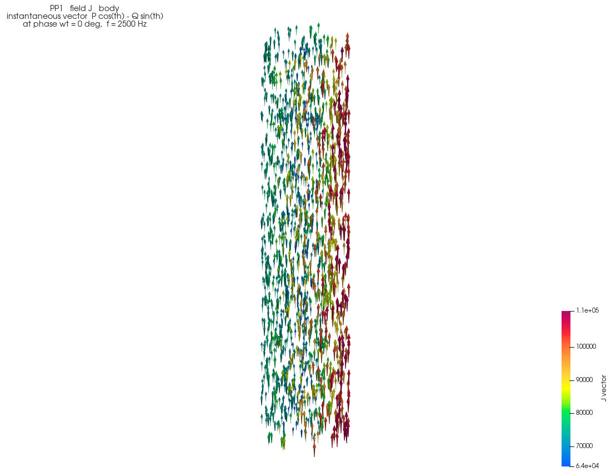
geometry = body, field = J,
display = vector, phase_deg = 0. A side view of the whole conductor;
every arrow points along +z and is coloured by |J|, from 6.4e4
to 1.09e5 A/m². At this instant wire 1 is at its peak: every cell is positive and
the net is +0.9995 A.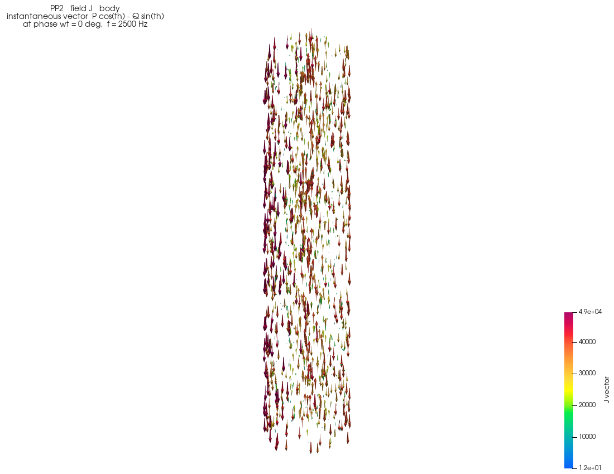
J is
not zero anywhere — see below.In PP1, read across the silhouette, which is a projection through the wire: the left edge is the face turned away from wire 2 and the right edge is the face turned toward it. The gradient between them is the proximity effect, quantified in §5.2. The skin effect is in this picture too but is harder to read here, because a projection superimposes the near and far surfaces on the middle of the silhouette — §5.1 is where it is measured properly.
PP2 is the more interesting of the two. Wire 2's net current is zero at this
instant, but J inside it reaches ±4.6e4 A/m² — 40 % of
wire 2's own phasor peak of 1.15e5 — and the outer shell and the core flow in
opposite directions: measured here, cells with J_z < 0 occupy
r/a = 0.64 … 0.98 and cells with J_z > 0 occupy
r/a = 0.01 … 0.76. The two cancel in the integral and not pointwise.
That is the skin effect stated in the time domain. J lags by 53° more at the core
than at the surface (§5.1), so the radii cannot all cross zero together; at the instant the
terminal current vanishes, what is left inside is a purely circulating eddy current.
The arrows read as downward in the picture because the outer shell dominates a projection — it
is both the larger magnitude and the longer path through the silhouette.
The heart of the tour: three pictures of the same B on the same plane, none of them
wrong, each answering a different question.
display = complex_magnitude (the default).
N = √(|P|² + |Q|²) = √2 × RMS, independent of phase.
Left–right symmetric about the perpendicular bisector, because both wires carry the same
amplitude and N does not care that they are 90° apart. |B| peaks in the
red ring at each conductor's surface and falls toward its axis, as it must. This is the one
that never blinks, which is why it is the default.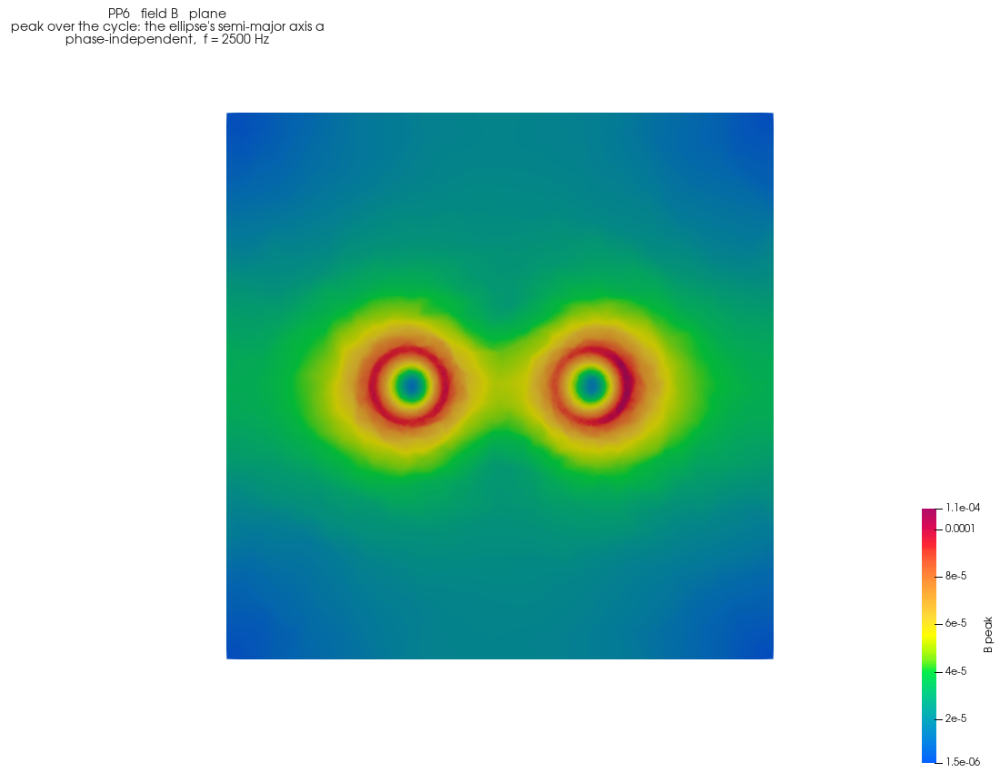
display = peak, the largest |B| ever reaches
over the cycle: the semi-major axis a of the polarization ellipse. Compare it with PP3
— where the field is circularly polarized the two differ by √2, and §6
measures exactly that.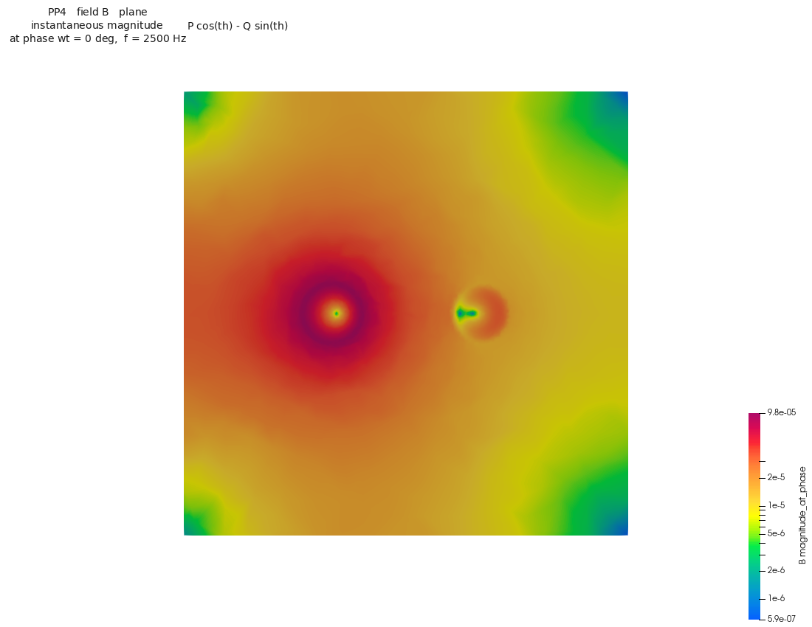
display = magnitude_at_phase, phase_deg = 0.
A single instant, |P cos θ − Q sin θ| at θ = 0.
Wire 1 is at its peak and wire 2 near zero, so the symmetry of PP3 is gone.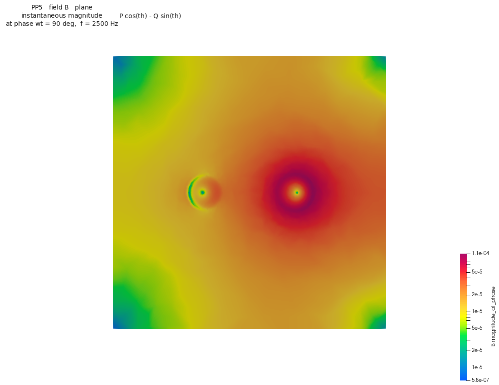
phase_deg = 90. A quarter cycle later the bright
region has moved to the other wire. PP4 and PP5 are what phase_deg
is.The three panels are not on a common colour scale, and the colour bars say so.
complex_magnitude never reaches zero, so its dynamic range stays narrow and the renderer
keeps the scale linear. magnitude_at_phase passes through zero wherever the
instantaneous field nulls, so its range blows up and the renderer switches to logarithmic. The
structure across the three is real; the relative brightness between them is not comparable. A
pinned range key would fix this and the input format does not have one yet.
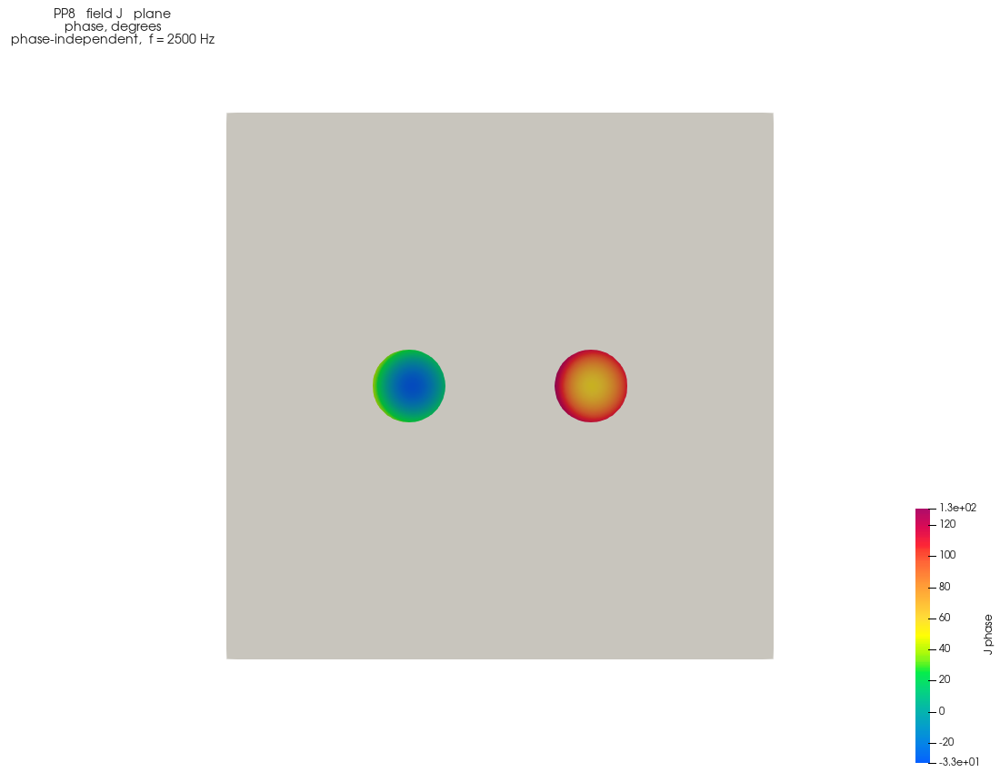
display = phase, component = z. A vector
field needs a component before a phase means anything, and the parser rejects
display = phase on a vector without one. The two wires sit about 90° apart, and
within each the phase varies with radius — the skin effect again, this time in the
argument rather than the magnitude.The air is blank on purpose. In an insulator J is identically zero,
and a zero vector has no phase — it points nowhere. atan2 returns an angle
regardless, and which angle depends on the sign bit of the zero:
atan2(+0.0, −0.0) = π, and 21,727 of this mesh's 37,706 air nodes hold
negative zero. The first version of this figure painted half the frame a confident, uniform
+180°.
The renderer now writes NaN wherever the magnitude is negligible relative to the field's own
scale, and sets the NaN colour to white — deliberately a colour the rainbow scale cannot
produce, so a reader cannot mistake it for a reading. It arrives on the page as the flat neutral
grey you see, RGB (200, 197, 189) against the figure's white margin, because
ParaView shades the slice like any other lit surface. Either way it is outside the scale.
The solver's output contains no NaN or Inf anywhere — that was checked directly. This is the renderer declining to invent a phase for a quantity that does not have one.
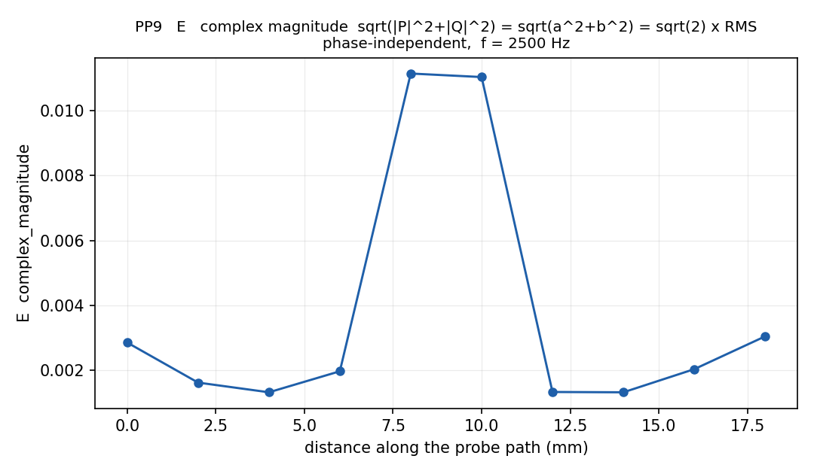
geometry = points. Ten coordinates along x at
mid-length, from x = −9 mm to +9 mm. This geometry produces a
graph, not a render, with the horizontal axis the arc length along the
path.Inside each conductor E ≈ 1.3e‑3 V/m, which is just
J/σ: 1 A spread over πa² = 12.6 mm² is
7.96e4 A/m², and 7.96e4 / 5.8e7 = 1.37e‑3. The peak is in the
air gap between the wires, about 1.1e‑2 V/m — eight times the value
inside the metal. That is the induced part, E = −jωA − ∇Φ:
in the gap both wires' vector potentials contribute, and A falls away toward the box
walls where n × A = 0 pins it, which is why the two end points are lower
again.
Four of these ten points sit exactly on a conductor surface —
x = ±3 and ±7 mm are the wire boundaries. The probe
interpolates nodal data, and the solver's own output header flags those nodes
iface = 1 and says E is meaningless there, because its normal component genuinely
jumps across a material interface. The figure is the renderer faithfully reporting what it was asked
for; the four interface values should not be read as field values. Move the probe points off the
surfaces, or read only the six clear of them.
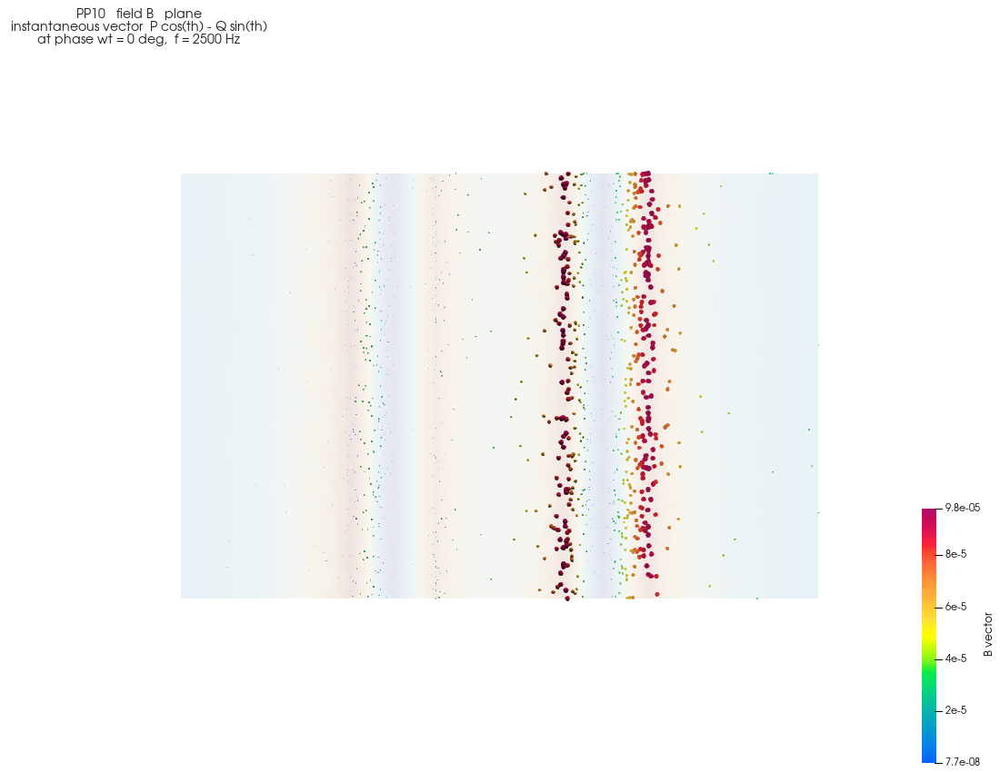
plane = zx, with no offset, so the cut is
y = 0, the plane through both wire axes. The glyphs render as dots, and that is
correct. This figure needs decoding, so the text below accounts for everything in the
frame.Three things are drawn, and only one of them is the data. The pale rectangle is the slice
itself, shown as a surface at 12 % opacity purely as a backdrop — the washed-out vertical
stripes are |B| on the cut, bleached nearly white. The dots are arrow glyphs:
Glyph(GlyphType = "Arrow") on every ~25th mesh point (Stride = n // 1500, so
about 1,500 of the 38,579 points on this slice), each oriented along B and scaled
and coloured by |B|. The colour bar is the third thing, and it reads
correctly.
They look like dots because they point at you. On y = 0, B is
almost perfectly normal to the plane:
mean |·| over the plane | |
|---|---|
|Bx| | 4.15e‑7 T |
|By| | 3.57e‑5 T |
|Bz| | 1.27e‑7 T |
Median |By|/|B| = 0.9999, and 94.3 % of the points have
|By|/|B| > 0.99. B around a z‑directed current is azimuthal,
and the plane through both axes is exactly the surface on which azimuthal means straight out of
the page. Every arrow is therefore seen end-on — you are looking down the barrel at the
cone head — and a bigger, redder dot simply means a larger |B|, because the Arrow
glyph scales uniformly in all three dimensions.
It is not a short-arrow artifact, which was checked separately: the median |B|
on the plane is 26 % of the maximum and the 75th percentile is 57 %, so a typical arrow has real
length. The degeneracy is in orientation, not scale.
What the dots say once decoded. The camera sits at +y looking along
−y with +z up, so screen-right is
f × u = (0,−1,0) × (0,0,1) = (−1,0,0): +x runs
leftward, putting wire 1 (x = −5 mm) on the right of the image and
wire 2 (x = +5) on the left. Measured across the cut:
| x band (mm) | mean |B|/max | |
|---|---|---|
| −9 … −7 | 0.841 | wire 1's outer surface |
| −7 … −5 | 0.584 | inside wire 1 |
| −5 … −3 | 0.401 | inside wire 1 |
| −3 … −1 | 0.827 | wire 1's inner surface |
| +3 … +5 | 0.066 | inside wire 2 |
| +5 … +7 | 0.254 | inside wire 2 |
The two dense dark-red columns are wire 1's two surfaces cut edge-on — the same
|B| peak that appears as a red ring in PP3, sliced through rather than viewed down the
axis — and |B| sags between them because it falls toward the wire's own axis. The
dim left half is wire 2 at its zero crossing: mean |B|/max is 0.166 there against
0.552 on wire 1's half, the same quadrature asymmetry as PP4.
The useful negative result of the tour. display = vector is readable
only when the plane is chosen to contain the field. The data here is right and only the glyph
direction is degenerate. For this geometry the xy plane of PP3–PP6 is the one that
shows B; zx is where J would be worth drawing instead.
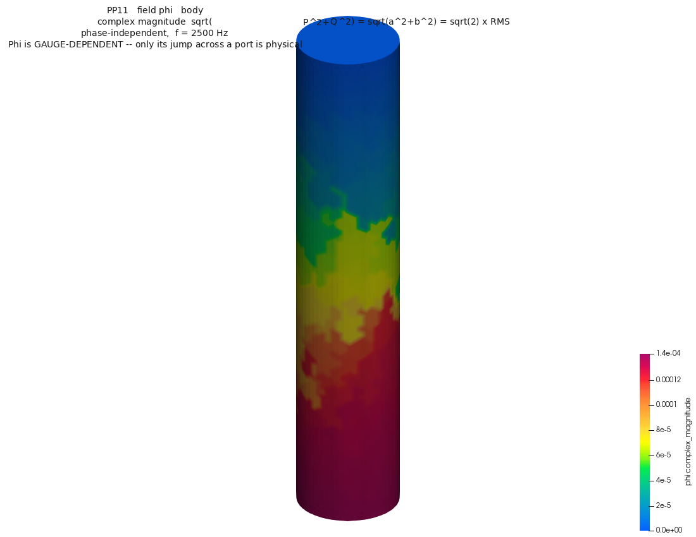
field = phi, a scalar, so no component is
needed. Note the caption the renderer stamps on it: Φ is gauge-dependent. Its value depends
on which spanning tree the tree‑cotree gauge happened to pick, not only on the problem — a
different tree shifts Φ by −jωψ. E, B,
H and J are the quantities that may be quoted; Φ and A are
bookkeeping. §7 is the evidence for that, including why this case's ωL/R = 4.48
puts PP11 firmly in the regime where Φ is mostly gauge.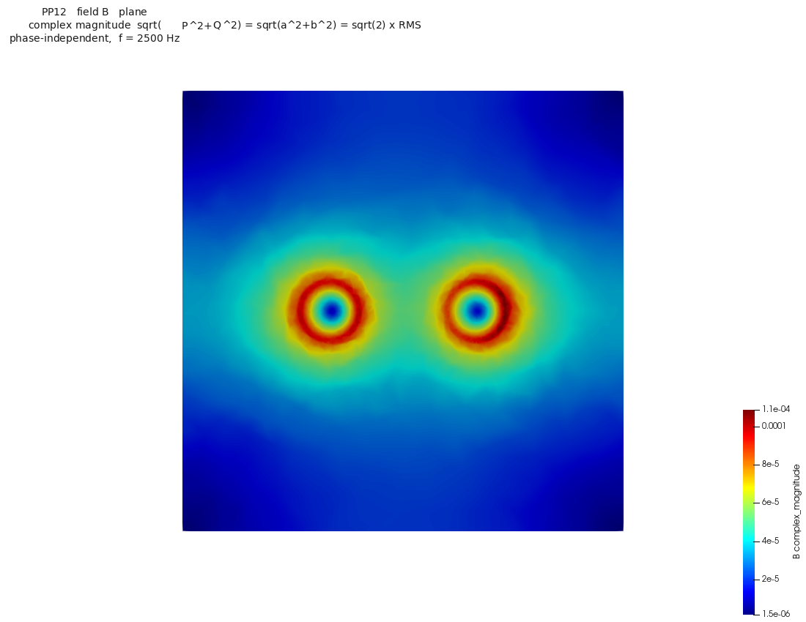
colormap = jet. Nine maps are available;
rainbow (Rainbow Uniform) is the default, chosen because it reads as a scale at
a glance without either end disappearing into the background.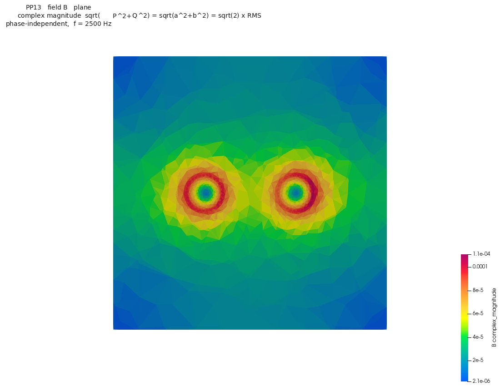
data = per_tet. One flat fill per element
against PP3's smooth interpolation. Per‑tet is not simply the uglier option: with first-order
Whitney edge elements B is exactly constant per tetrahedron, so the cell array
is the computed answer and the nodal one is an average of it. Nodal is the default because it
reads better; per‑tet is the honest one near a material interface, where the nodal average
blends two values the field genuinely jumps between.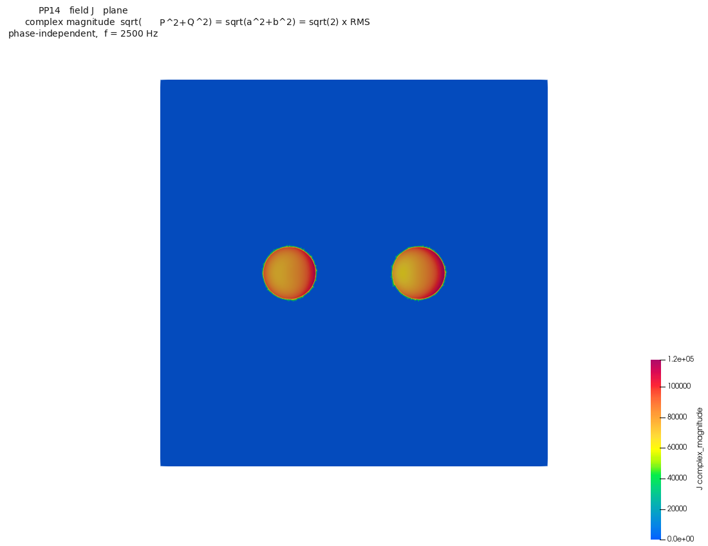
J, phase-independent. Symmetric, both wires equally
bright.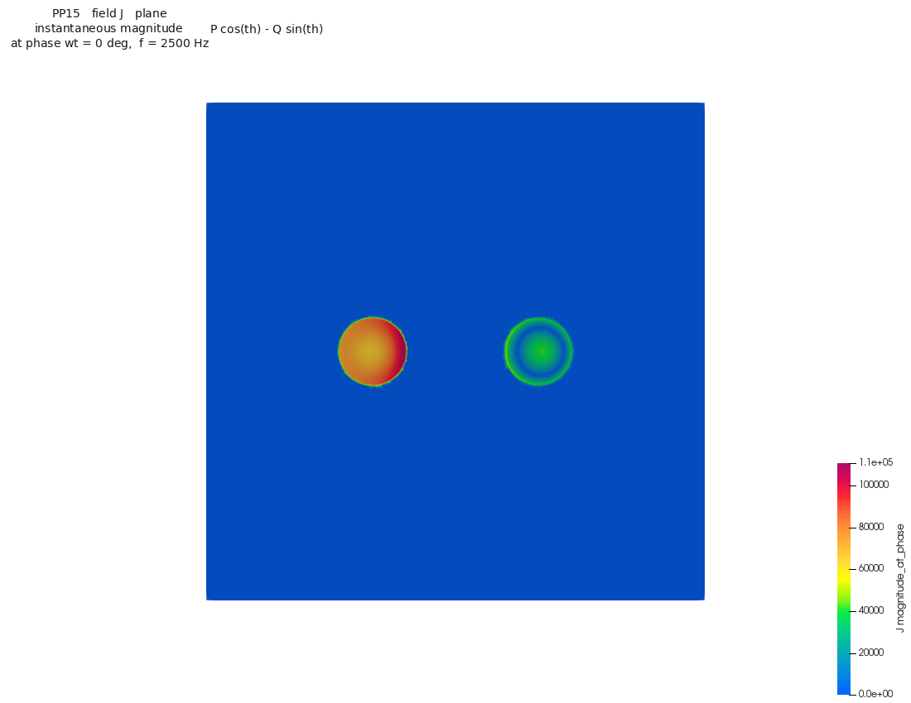
phase_deg = 0. Wire 1 carries its full current while
wire 2 sits at its zero crossing.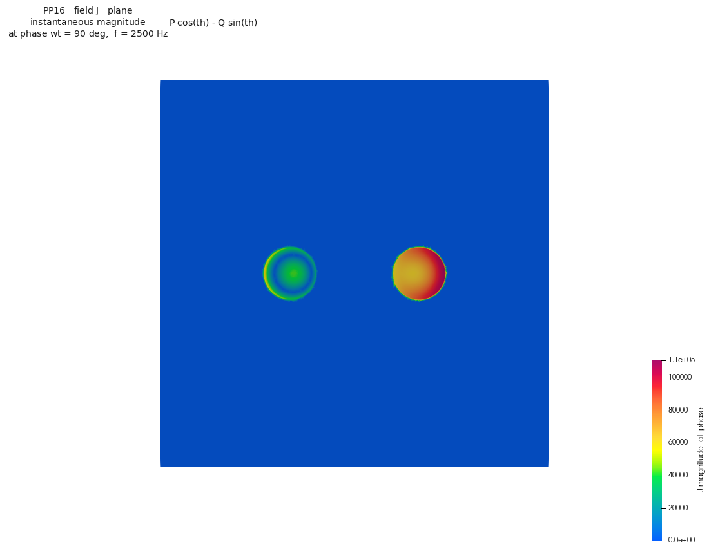
phase_deg = 90. A quarter cycle later they
swap.The current is the quantity being driven, so PP15 and PP16 are the most direct view of
what a port phase_deg does. PP4 and PP5 show the same thing one step removed, in the
field those currents produce.
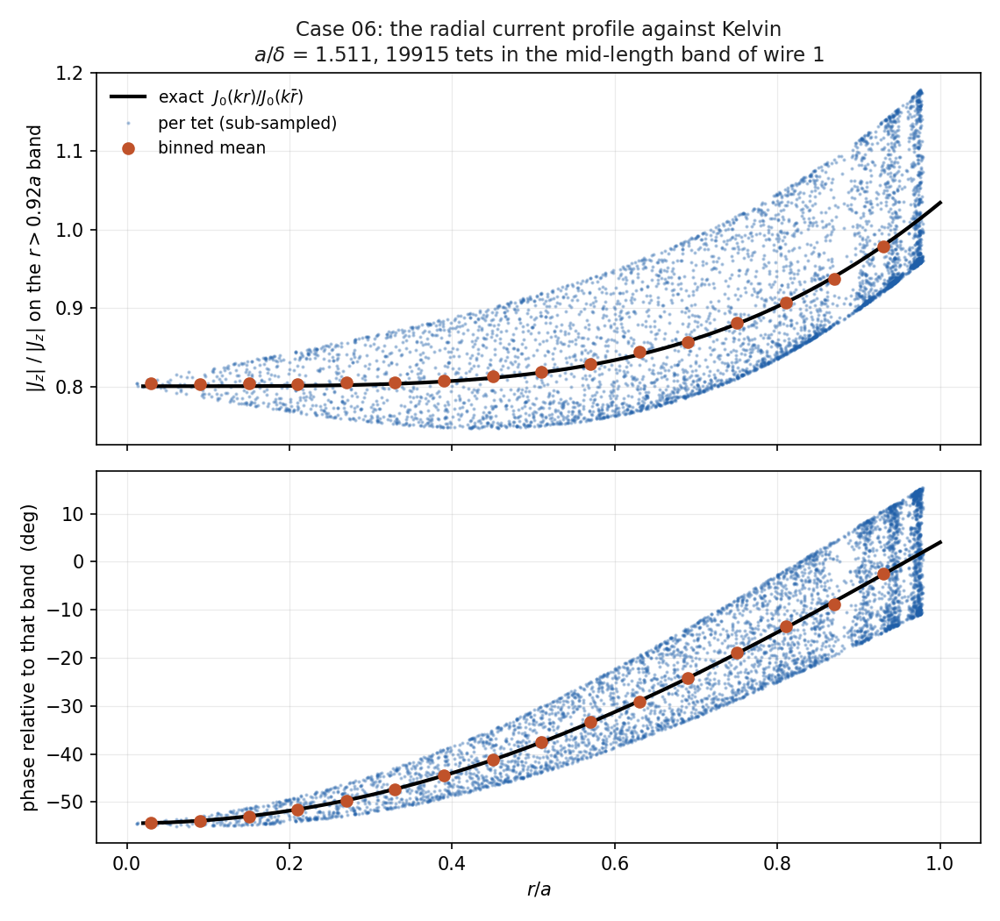
J_z, magnitude above and phase below. Faint blue
dots are individual tetrahedra in the mid-length band of wire 1 (sub-sampled); orange circles are the
mean within each radial bin; the black curve is Kelvin. The azimuthal spread of the blue cloud at any
radius is the proximity effect of §5.2.Inside a straight round conductor the diffusion equation
∇²J_z = jωμσ J_z reduces to Bessel's equation, whose bounded
solution is
At 2.5 kHz in copper δ = 1.3217 mm and a/δ = 1.511. Measured
against that, per tools/skin_profile.py:
r/a | measured | Kelvin | err | lag | Kelvin | err |
|---|---|---|---|---|---|---|
| 0.00–0.20 | 0.8034 | 0.8006 | +0.35 % | −53.09° | −53.05° | −0.04° |
| 0.20–0.40 | 0.8048 | 0.8028 | +0.24 % | −47.86° | −47.86° | +0.00° |
| 0.40–0.60 | 0.8182 | 0.8171 | +0.14 % | −37.54° | −37.56° | +0.03° |
| 0.60–0.80 | 0.8624 | 0.8621 | +0.04 % | −22.64° | −22.71° | +0.07° |
| 0.80–0.92 | 0.9343 | 0.9349 | −0.06 % | −8.78° | −8.91° | +0.13° |
A 53° lag from surface to core, reproduced to 0.04°, and the magnitude profile to
better than 0.35 % everywhere. Both sides are anchored on the same r > 0.92a band,
whose mean radius is 0.9575a — §5.3 is about why that sentence matters more
than it looks.
tools/skin_profile.py reduces any case's output the same way, which makes the
comparison portable:
a/δ | elements per δ | core |J| err | worst lag err | |
|---|---|---|---|---|
| 04, single cylinder | 2.998 | 3.2 | +1.20 % | 0.39° |
| 06, this case | 1.511 | 4.2 | +0.35 % | 0.13° |
Case 06 is the better‑resolved of the two per skin depth; case 04 is the harder
problem — 138° of rotation from surface to core against 53°, and |J|
down to 27 % of its surface value against 80 %.
|J| facing the neighbour / away from it | |
|---|---|
| wire 1 | 1.137 |
| wire 2 | 0.766 |
The neighbour's field redistributes current around the circumference by +14 % and −23 %. It is what makes PP1's arrows asymmetric. The two wires are pushed opposite ways precisely because they are 90° apart: at any instant one is near its peak while the other is at its zero crossing, so what each sees from the other is not the same thing.
Kelvin's solution is axisymmetric and contains none of this, so the comparison in §5.1 uses the azimuthal mean at each radius, which removes it to first order. The proximity effect is real physics the case captures and the analytic reference does not describe — it is not an error, and it is not something the §5.1 table is testing.
This is the most useful thing the case taught, and it cost two wrong results.
Kelvin's profile is normalised at r = a. A measurement cannot be: a cell band
"at the surface" is r > 0.92a, whose mean radius is 0.9575a, because cell
centres never reach the boundary. Dividing the measurement by J(0.9575a) while dividing
the theory by J(a) compares two profiles pinned at different places, and inflates every
measured ratio by about +3.5 %.
That offset contains no h, so no amount of refinement can remove it
— and it told a thoroughly convincing story: core errors of 7.2 % that "improved" to 3.9 %
under refinement and then stalled, an apparent convergence order collapsing to 0.37, and a tidy
physical explanation for the floor (a modelling error from the proximity effect, or from the finite
length). All of it was one constant offset sitting on a real error ten times smaller. The retracted
7 % figure was quoted in two_wires.geo's own header until this report was written.
Two controls placed it. A single isolated wire — same radius, length, box and element
size, no neighbour — showed the identical error, so not the proximity effect. Narrowing
the axial sample band from 0.30–0.70 Lz to 0.45–0.55 Lz changed
the fourth decimal, so not the ends. An error that survives removing the neighbour, ignores axial
position, and ignores element size is in the instrument, not the solve.
A second, subtler version of the same mistake followed. The measured reference is a mean over
cells, so the Bessel reference must be the mean of J0 over those same
radii — not J0 evaluated at their mean radius. J0 is not linear,
so the two differ by its curvature across the band. Case 04's own make_plots.py had
always done this correctly; the shared tool had not.
A third, found while writing §7: the radius itself. Inferring a from a percentile
of cell‑centre radii under-reads it by about 2 %, because the outermost centre sits half an
element inside the surface — and under-reading a inflates the reported
a/δ. The cross-section area is unbiased:
a = √(area/π), which is what both scripts now use, and
tools/skin_profile.py prints the ratio of the two as a roundness check.
The payoff, and the reason for the geometry.
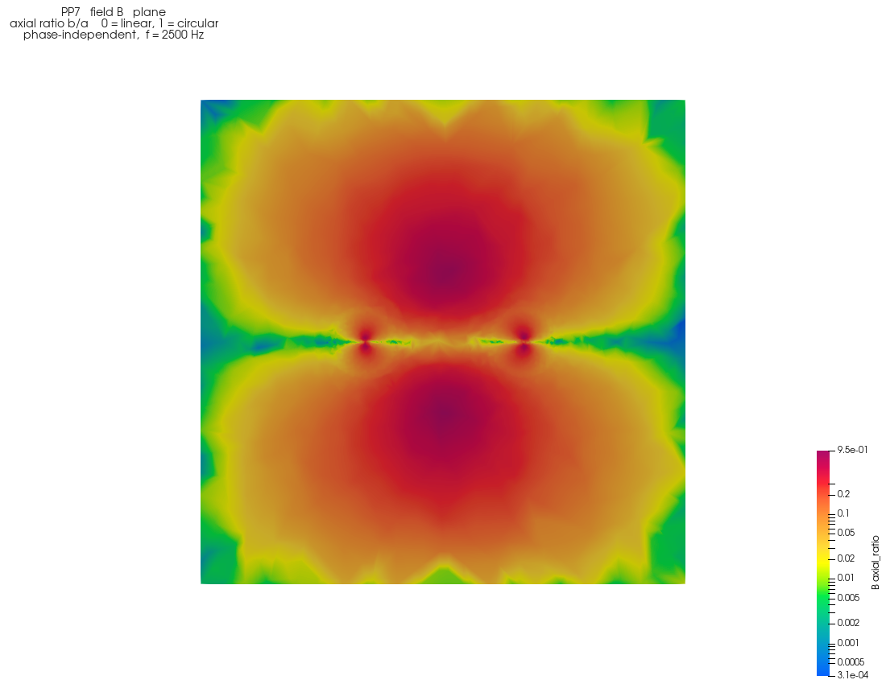
display = axial_ratio: the shape of the
polarization ellipse, b/a, which is 0 for a linearly polarized field and 1 for a circular
one. Two lobes above and below the line of centres, and a null along it.Both features are what the two-wire superposition predicts. A phasor vector traces
B(u) = P cos u − Q sin u; with I₁ = I and
I₂ = jI the real part P is the field of wire 1 alone and the imaginary
part Q is the field of wire 2 alone. So:
| measured | exact | |
|---|---|---|
max b/a near (0, ±d/2) | 0.9647 | 1 |
N/a at the most circular cell | 1.3895 | √2 = 1.41421 |
median b/a − analytic, per cell, near the axis | −0.0098 | 0 |
N/a = √2 is the equality case of the chain
b ≤ |B(θ)| ≤ a ≤ N ≤ √2 a, derived in
docs/ComplexVectorPhasorConcept.md. Where the field is circularly polarized,
complex_magnitude exceeds the true peak by 41 % — so PP3 and PP6 differ by
that much at those two points and not at all on the line of centres. That is the whole of the phasor
document in two pictures.
Read axial_ratio next to a magnitude plot, never alone. Here the
ellipticity sits where the field is strong: the median b/a is 0.140 among cells carrying
at least 30 % of peak |B|. In case 05 it was the opposite — the most circular cell
there carried 8.1e-04 of the peak, three decades down and physically invisible. A nearly
circular but negligible field is indistinguishable from a nearly circular dominant one on this plot,
because the plot shows only shape.
PP11 carries a warning stamped by the renderer — Φ is gauge-dependent. This
section is what stands behind it, because the claim is sharper than it sounds and the obvious reading
of it is wrong. Everything here was measured on 01_OneCylinder, whose small mesh makes a
three-way comparison cheap, and then anchored back to this case.
A and Φ are not unique. For any scalar field ψ,
leaves every field unchanged. B survives because the curl of a gradient is identically
zero:
and E survives because the two shifts cancel against each other:
H = B/μ and J = σE inherit it. Neither potential is invariant
on its own; only the combination that forms E is, which is why A and Φ must move
together.
This is exact in the discrete system, not only in the continuum, and that is
precisely what licenses tree‑cotree gauging. The gradient of a nodal function is exactly
representable in the Whitney edge space — on edge (i,j) its degree of freedom is
just ψ_j − ψ_i — so the discrete gauge freedom is exactly the set of
discrete gradients and the discrete ∇×∇ψ is exactly zero. Nothing in
the cancellation is a discretisation approximation.
The tree‑cotree gauge picks one representative by forcing A = 0 on a spanning
tree's edges. A different tree picks a different representative, so solving the same problem on
two trees is a direct test.
Different trees were obtained by permuting the order the nodes are listed in the .msh.
The reader assigns each node its internal index in file order, edges are numbered by sorted vertex
pair, and the tree is rooted at the lowest-numbered Dirichlet node — so reordering the file
changes the tree while the mesh stays geometrically identical. That it worked is confirmed by the
solver: identical 23,547 tets and 55,652 unknowns, but 1,144,897 / 1,145,056 / 1,145,083 stored
nonzeros — different edges gauged away.
| max value | max change | relative | |
|---|---|---|---|
| Φ potential | 1.0000e+00 | 1.5186e‑01 | 1.52e‑01 |
| A potential | 1.8376e+00 | 3.9800e‑01 | 2.17e‑01 |
B field | 2.8329e+00 | 4.5522e‑12 | 1.61e‑12 |
E field | 3.7594e+01 | 6.1495e‑12 | 1.64e‑13 |
H field | 2.2544e+06 | 3.6226e‑06 | 1.61e‑12 |
J field | 4.9177e+08 | 3.0737e‑04 | 6.25e‑13 |
Both potentials move by 15–22 %. Every field is unchanged at 1e‑12 to 1e‑13 — eleven orders of magnitude between the two groups. The residual is not leftover gauge sensitivity: the three runs factorize genuinely different matrices, so the arithmetic happens in a different order, and 1e‑13 is what double precision accumulates through a 1.1 M-nonzero factorization.
ωL/R decides how much of Φ is gaugeωL/R does not make Φ gauge-dependent — Φ is gauge-dependent at
every frequency. What it sets is the size of the gauge term relative to the part you wanted to
read. Integrate the field definition along the conductor:
The first term is built from E, invariant to 1e‑13 by the table above. The second
is built from A, which is exactly what the gauge shifts — under
A → A + ∇ψ it changes by
jω[ψ(end) − ψ(start)]. Their ratio is ωL/R.
It saturates, because a contaminated fraction cannot exceed 1. The correct form is
which was checked rather than assumed. Case 01 has R = 2.26e‑6 Ω,
L = 20.9 nH:
ωL/R | sin(arg Z) | |
|---|---|---|
| 50 Hz | 2.89 | 0.945 |
| 1 Hz | 0.0578 | 0.0577 |
predicted ratio 16.4, against measured 15.9 (Φ vs z/L) and
16.0 (tree-to-tree shift) — agreement to 3 %. Note this is emphatically not 50:
the plain ωL/R ratio would predict 50 and the measurement says 16, so the saturating
form is the right one. The leftover factor of ~1.8 in the absolute value is the O(1)
geometric constant in ψ ~ |A|·ℓ, with ℓ the tree path
length — which is tree-dependent, and that is the point.
Where each case sits:
| case | ωL/R | Φ vs z/L | Φ checked? |
|---|---|---|---|
| 02, 03 | ≪ 1 | 8.26e‑04 / 4.3e‑06 | asserted |
| 01 @ 50 Hz | 2.89 | 0.488 | deliberately omitted |
| 06, this case | 4.48 | — | not applicable |
| 04 | 12.8 | 0.51 | deliberately omitted |
This case's figure is from R = 3.086e‑5 Ω taken from ohmic dissipation
(R = 2P/|I|², giving R/R_dc = 1.1245 at a/δ = 1.511)
and L = 8.80 nH. R must come from dissipation here and not from
V/I: with I₂ = jI₁ the mutual term
jωM·I₂ = −ωM·I₁ is real, so it adds to
one wire's driving-point resistance and subtracts from the other's — measured, 6.65e‑5 and
4.63e‑6, which straddle R_dc = 2.74e‑5 and even put wire 1 below it.
Dissipation gives 3.0857e‑5 and 3.0904e‑5 for the two wires, agreeing to 0.15 % as they
must. The mutual term lands entirely outside L, which is why both wires report the same
8.80 nH.
So PP11 is firmly in the gauge-dominated regime, and reading its colour bar as a voltage would be a mistake.
Why a magnitude probe can still look right. At low ω the current
is nearly in phase with the drive, so A is nearly real, so ψ is nearly
real — and −jωψ is then nearly purely imaginary. It lands in
Im(Φ) and leaves Re(Φ) almost clean. Measured inside the wire:
| freq | max |δRe(Φ)| | max |δIm(Φ)| |
|---|---|---|
| 1 Hz | 5.64e‑04 | 9.50e‑03 |
| 50 Hz | 1.44e‑01 | 4.96e‑02 |
At 1 Hz the contamination is 17× larger in the imaginary part; by 50 Hz it has flooded into
the real part and dominates there. That is why Re(Φ) tracks z/L to
1.9e‑03 at 1 Hz and to only 4.88e‑01 at 50 Hz — a factor of 254 on a 50× change
in ω, steeper than the complex quantity's 16× because the real part only picks
up a higher-order remainder.
This is the part that matters in practice, and it refuted the natural guess.
The gauge function is not free everywhere. n × A = 0 on the outer boundary forces
ψ to be constant on it; a port that pins Φ forces ψ = 0
there. In this case and in case 01 the wires run the full height of the box, so both terminals lie
in the box's end faces, and the box surface is connected — so ψ = 0 on the
whole outer boundary, terminals included.
Recovering ψ from the measured shift
(δψ = jδΦ/ω) confirms it:
| region | nodes | max |δψ| (Wb) |
|---|---|---|
| the whole outer boundary | 4,770 | 3.93e‑21 |
| of which, the driven terminal | 477 | 3.83e‑21 |
| of which, the 0 V reference | 477 | 0.00e+00 |
| the interior | 29,478 | 3.35e‑09 |
Twelve orders of magnitude. The gauge lives in the interior and vanishes on the boundary, so it distorts the shape of Φ while pinning its endpoints.
With a current source this still holds, which is not obvious: a current-driven port pins
Φ at the reference terminal only, leaving the driven terminal's potential a free unknown. Driving
case 01's geometry with 1 A at ωL/R = 2.89 — the gauge-dominated regime
— on the same three trees:
| tree | |V| (V) | R (Ω) | L (H) |
|---|---|---|---|
| base | 6.926620e‑06 | 2.264520e‑06 | 2.083654e‑08 |
| permA | 6.926620e‑06 | 2.264520e‑06 | 2.083654e‑08 |
| permB | 6.926620e‑06 | 2.264520e‑06 | 2.083654e‑08 |
Identical. The change in V across trees is 1.2e‑18 V — 0.00 % —
and the driven face comes out an exact equipotential (spread 4e‑22). The reason is 7.4's first
paragraph: that terminal sits on the outer boundary, where ψ is pinned to zero
regardless of which port type drives it. R and L also match the
voltage-driven solve's 2.26e‑6 Ω and 20.87 nH.
The caveat is the geometry, not the port type. This argument needs the terminal to
lie on the outer boundary where n × A = 0. An electrode floating in the
interior of the domain would have no such protection, and its potential would be
gauge-dependent. Every case in this suite puts its terminals on the boundary.
| Always safe | E, B, H, J; terminal voltages; ∫E·dl on a stated path; I, R, L, Z |
Safe only when ωL/R ≪ 1 | Re(Φ) as a z/L gradient inside a conductor |
| Never | Φ or A at an interior node, read as a physical potential |
And one point that is physics rather than numerics: in a time-varying field the voltage between two points is genuinely path-dependent — that is Faraday's law. Any tool that reports a single "the potential here" has quietly chosen a path, or a gauge, on your behalf.
..\check.bat 06_TwoWires_Quadrature runs verify_two_wires.py. Eight
checks, all passing:
| measured | target | |
|---|---|---|
|I| in wire 1 | 1.000405 | 1 A ± 2 % |
|I| in wire 2 | 0.998795 | 1 A ± 2 % |
| phase difference | 90.014° | 90° ± 1° |
max b/a near (0, ±d/2) | 0.9647 | ≥ 0.90 |
N/a at the most circular cell | 1.3895 | √2 ± 0.05 |
median b/a − analytic, per cell | −0.0098 | 0 ± 0.03 |
core |J| vs Kelvin | 0.80301 | 0.80028 ± 1 % |
| core phase lag vs Kelvin | −53.126° | −53.230° ± 0.5° |
The b/a residual is compared cell by cell, with the analytic value evaluated at
each cell's own centroid. An earlier version compared the cells' median against the
analytic's area average over the same region: that assertion moved from 0.0658 to 0.0509 when
the mesh was refined while no physics changed at all. A test that moves with the mesh and not with
the field is measuring the mesh.
| Tets | 192,368 |
| Unknowns | 448,438 — A: 190,175 free edges, 31,733 gauged to zero, 6,582 Dirichlet; Φ: the rest |
| Stored nonzeros | 9,659,864 |
nnz(L) after AMD | 384,933,274 |
| Backward error | 5.33e‑22 |
| Timing | assemble 0.75 s, analyze 5.0 s, factorize 10.8 s, solve 0.23 s |
gmsh two_wires.geo -3 -o two_wires.msh
..\run_case.bat two_wires.aphi
"C:\Program Files\ParaView 6.1.1\bin\pvbatch.exe" ..\..\tools\postprocess.py output
"C:\Program Files\ParaView 6.1.1\bin\pvbatch.exe" make_report_figs.py output
"C:\Program Files\ParaView 6.1.1\bin\pvpython.exe" collect_postprocess_figs.py
sh build_doc.shmake_convergence_data.py rebuilds §2.2's three meshes and
convergence.json; it takes a few minutes and is only needed when the mesh changes.
tools/skin_profile.py <output-dir> prints §5.1 for this or any other case.
Run build_doc.sh after regenerating figures, or
TwoWiresValidation.html and .pdf keep showing the previous run's pictures
— they are inlined, not referenced.